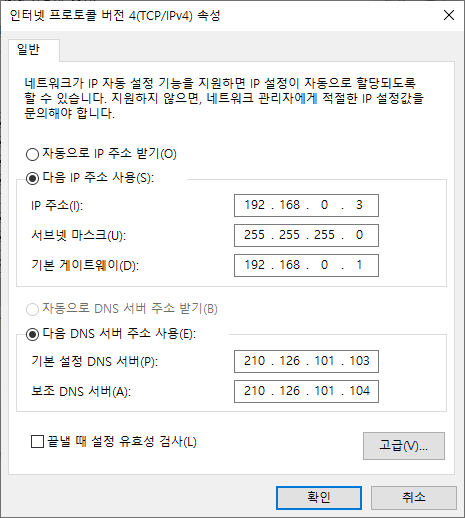

1. atVision 개요
atVision은 스마트 카메라 VC 시리즈의 전용 소프트웨어로서 GUI (Graphical User Interface)를 통해 직관적인 사용이 가능합니다. 특히 총 64개의 작업 그룹 설정은 물론 ROI 범위, 입출력 조건 등의 다양한 파라미터 설정을 통해 유연한 검사 환경을 구현할 수 있습니다.
또한, 검사 결과에 대한 실시간 모니터링과 필요 시 이미지 필터를 통해 추가 보정이 가능하여 편의성과 검사의 정확성을 향상하였습니다.
- 다양한 검사 기능
-
위치 보정, 밝기, 대비, 영역, 에지, 형상 비교, 길이, 각도, 지름, 물체 개수, 바코드, OCR, 패턴 인식 등
- 64개의 작업 그룹 설정
-
작업환경 변화에도 유연한 대처 가능 (그룹별 검사 지점 32개)
- 작업그룹 관리 및 파라미터 설정
-
스마트 카메라에 저장된 작업그룹을 PC에 복사 및 저장이 가능하며, PC의 저장된 작업그룹을 스마트카메라에 복사 및 저장이 가능합니다.
ROI 범위, 입출력 조건, 이미지 분해능 등 다양한 파라미터 설정을 통해 유연한 검사 환경 구현이 가능합니다. - 검사 결과 실시간 모니터링
-
검사 항목의 합격/불합격 결과를 실시간으로 모니터링 할 수 있으며, 필요 시에는 이미지 필터를 통해 이미지 추가 보정이 가능합니다.
작업 그룹 별 출력 데이터 선정 및 모드버스 TCP/IP 주소 할당을 자유롭게 설정할 수 있습니다. - 검사 결과 이미지 FTP 서버 전송
-
검사 결과 이미지를 설정에 따라, FTP 서버로 전송하여 저장할 수 있습니다. 또한, 저장 시 파일 이름 생성 규칙을 설정할 수 있어 파일 관리가 간편합니다.
2. atVision 작업 흐름
2.1. 설정 모드
-
네트워크 설정 및 디바이스 연결
-
네트워크 설정

-
디바이스 연결

-
-
파라미터 설정
이미지 촬영을 위한 파라미터 설정
-
검사 설정
-
검사 대상 촬영 또는 이미지 파일 불러오기
-
검사 항목 설정
기능 설명 위치보정
등록한 물체를 기준으로 위치와 회전을 보정합니다.
바코드
바코드를 검사합니다.
데이터
매트릭스 데이터 매트릭스를 검사합니다.
QR 코드
QR 코드를 검사합니다.
문자 추출
문자와 배경을 분리합니다.
문자 인식
배경과 분리된 문자를 읽습니다.
영역
물체의 영역을 검사합니다.
각도
두 에지 사이의 각도를 검사합니다.
밝기
물체의 평균 밝기를 검사합니다.
대비
물체의 대비를 검사합니다.
지름
원형의 지름을 검사합니다.
길이
두 에지 사이의 길이를 검사합니다.
에지
에지의 유무를 검사합니다.
물체 개수
물체의 개수를 검사합니다.
골든 템플릿
물체의 손실율을 검사합니다.
다중 패턴 비교_에지
물체의 에지 패턴을 이용하여 다중패턴을 검사합니다.
단일 패턴 비교_에지
물체의 에지 패턴을 이용하여 단일패턴을 검사합니다.
다중 패턴 비교_픽셀
물체의 픽셀 패턴을 이용하여 다중패턴을 검사합니다.
단일 패턴 비교_픽셀
물체의 픽셀 패턴을 이용하여 단일패턴을 검사합니다.
-
-
검사 - 동작 모드
2.2. 동작 모드
- 트리거 입력
-
트리거 입력 - 트리거 합격 불합격 검사 - 트리거 지연 적용 (불합격시 초기 단계 로 이동)
- CMOS 이미지 읽기
-
화상 소자를 이용하여 이미지 촬영
- 이미지 처리 및 검사 결과 산출
-
작업 그룹 설정 적용, 작업 그룹 내 최대 32개 항목 검사 수행
- 출력 실행
-
HS OUT 0, HS OUT 1 출력 연산
출력 논리 조합 적용
지연 시간, 유지 시간 적용 - FTP 파일 전송
-
설정된 결과 이미지 FTP 전송
- Ethernet 통신
-
이미지 확인 및 동작 상태 확인, 비전 센서 실시간 모니터링
3. 설치
3.1. 시스템 요구 사항
atVision 사용에 필요한 최소 사양은 다음과 같습니다.
| 항목 | 최소 사양 |
|---|---|
CPU |
1 GHz 이상 |
OS |
Windows 7 (×64) 이상 |
RAM |
4 GB 이상 |
저장 공간 |
10 GB 이상의 하드디스크 여유공간 |
해상도 |
1280×800 이상 |
기타 |
RJ45 Ethernet 포트, GigE 네트워크 인터페이스 카드 |
|
Note
|
검사 항목 수량에 따라 추가적인 하드디스크 용량이 필요할 수 있습니다. |
3.2. 소프트웨어 설치
-
당사 홈페이지(www.autonics.com)에서 atVision 소프트웨어를 다운로드 하십시오.
-
atVision 설치 시작 전 가능한 모든 프로그램을 종료하십시오.
atVision setup.exe 파일을 더블클릭하면 설치가 시작됩니다. -
설치 시 사용권 계약 동의 사항 전체를 숙지한 후 동의함을 클릭하십시오.
마우스 스크롤, 아래방향 화살표 클릭 또는 키보드의 Page Down (PgDn) 키를 클릭하여 사용권 계약 동의 사항 전체를 확인할 수 있습니다. -
기본 설치 경로는 C:\Program Files (x86)\Autonics\atVision\ 입니다.
만약 설치 경로를 변경하고자 할 경우에는 [찾아보기] 버튼을 클릭한 후 사용자가 설치하고자 하는 폴더를 지정한 후 [확인] 버튼을 클릭하면 해당 폴더에 설치합니다. -
설치가 완료되면 설치완료 화면이 나타납니다. 설치완료 화면의 체크박스에 체크하면 설치종료와 함께 atVision Master 를 실행할 수 있습니다.
이후에는 바탕화면의 Vision Master 아이콘을 더블클릭하면 atVision을 실행합니다.
3.3. 폴더 구성 정보
atVision을 설치하였을 때 설치된 폴더의 구성에 대하여 설명합니다.
atVision 폴더는 기본설치 시 [C:\Program Files (x86)\Autonics\]의 하부 폴더에 생성되며, 설치위치를 변경했을 경우 변경된 설치폴더에 위치합니다.
atVision의 설치가 완료되면 atVision 설치 폴더 외 atVision 관련 폴더 (Image, Log, Work 등)는 [C:\Users\사용자 계정\Documents\Autonics\]의 하부 폴더에 생성되며, 작업그룹 및 문서가 저장됩니다.
- Image
-
atVision의 검사 파라미터에서 결과 이미지 저장을 ON 으로 설정한 경우, 지정된 경로로 검사 결과 이미지가 저장됩니다. 저장 경로는 고정되어 있으므로 저장 위치를 변경할 수 없습니다.
[C:\Users\사용자 계정\Documents\Autonics\atVision\Image\ResultImage] 해당 폴더에 저장됩니다. - Log
-
디바이스와의 연결/연결 해제 및 검사 결과에 대한 로그가 저장됩니다.
- Work
-
atVision에서 등록한 작업그룹을 PC 에 저장할 경우, 해당 작업그룹이 저장됩니다.
또한, 작업그룹 관리자를 통해 디바이스에 저장된 작업그룹을 PC 로 복사할 경우에, 해당 작업그룹이저장됩니다.
단, 작업그룹을 PC 에 저장할 때, 저장 경로를 변경할 경우, 변경한 폴더에 저장됩니다.
3.4. 소프트웨어 제거
atVision의 제거는 을 선택하는 방법과 메뉴에서 atVision을 선택하여 제거하는 방법이 있습니다.
프로그램 제거를 선택하면 선택화면이 나타나며 예(Y) 클릭하면 atVision은 사용자의 컴퓨터에서 제거됩니다.
4. 연결
스마트 카메라는 TCP/IP (Transmission Control Protocol/Internet Protocol)를 이용하여 atVision과 접속하고, 메시지 및 데이터를 송수신 합니다.
또한, FTP (File Transfer Protocol)를 이용하여 검사 결과 이미지를 서버와 PC에 저장합니다.
스마트 카메라와 atVision간 데이터 송수신은 비동기 (Asynchronous) 통신 방식을 사용하고, 스마트 카메라는 서버 소켓, atVision은 클라이언트 소켓을 사용합니다.
4.1. 네트워크 설정
4.1.1. 소켓 구분
| 소켓 | IP 주소 | 서브넷 마스크 | 게이트웨이 |
|---|---|---|---|
서버 |
192.168.0.2 |
255.255.255.0 |
192.168.0.1 |
| 소켓 | IP 주소 | 서브넷 마스크 | 게이트웨이 |
|---|---|---|---|
서버 |
192.168.0.3 |
255.255.255.0 |
192.168.0.1 |
4.1.2. 네트워크 연결 설정
-
관리자 권한으로 PC에 접속합니다.
-
으로 진입합니다.
-
"로컬 영역 연결" 을 오른쪽 클릭한 뒤 속성 (R) 을 선택합니다.

-
"이더넷 속성" 창이 열리면, 이 연결에 다음 항목사용 (O) 에서 "인터넷 프로토콜 버전 4 (TCP/IPv4)" 를 선택하고 속성 (R) 버튼을 클릭합니다.

-
"Internet Protocal Version 4 (TCP/IPv4) 속성" 창에서, "다음 IP 주소 사용 (S):" 을 선택하고, IP 주소, 서브넷 마스크, 기본 게이트웨이를 입력합니다. (기존의 네크워크에 접속할 경우에는 네크워크 관리자에게 지정받은 고유 IP 주소를 입력합니다.)
IP 주소 서브넷 마스크 게이트웨이 192.168.0.3
255.255.255.9
192.168.0.1
 -
확인 버튼을 눌러, 설정을 저장합니다.
4.2. 디바이스 연결
디바이스가 연결되지 않은 초기 화면은 다음과 같습니다.

-
프로그램 좌측 디바이스 정보 창에서
 버튼 또는 버튼을 눌러 "디바이스 추가" 창을 엽니다.
버튼 또는 버튼을 눌러 "디바이스 추가" 창을 엽니다. -
사용중인 PC의 네트워크에 물리적으로 연결된 디바이스를 표시합니다. 디바이스를 선택 후, 확인 을 클릭합니다.

-
이전에 등록되었거나 현재 연결중이면 다음과 같이 비활성화 된 상태로 표시됩니다.

-
디바이스 추가가 완료되면 하단 디바이스 리스트에 다음과 같이 디바이스가 추가되어 표시됩니다.

-
디바이스 리스트에서 추가된 디바이스 우측에 버튼을 클릭하여 디바이스를 연결합니다. 다음과 같이 "연결 됨" 표시와 함께 연결이 완료됩니다.
 Note
Note디바이스 연결 상태는 다음과 같습니다.
표시 설명 연결되지 않음

연결됨

재연결 시도중

검사 진행